家族そろって先生にドヤ顔！ [梅吉]
昨年10月の予防接種時に獣医さんからダイエット指令を受けた梅吉さん。
経過1ヶ月の記事
経過2ヶ月の記事
今日はダイエットの成果を持って病院に行ってきました。
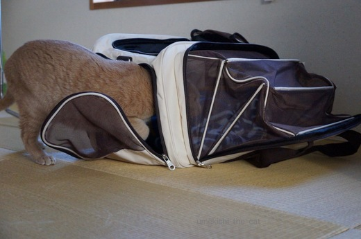
キャリーを出すと余裕で探索。
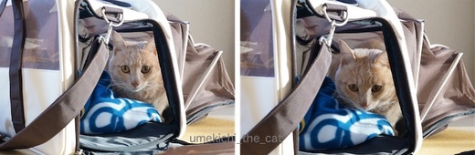
とりあえず入ってみる。あ、ちょっと恐怖の記憶が蘇ってきたかな？
今日は大阪にしてはとんでもなく寒くて風も強いので
あったかいタオルでしっかりガードしてお出かけです。
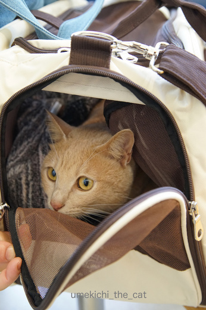
病院の待合室にて。さすがに不安そうです。
先生の顔を見るなり、フーッ！シャーッ！！うぉーーーーんっ！！！笑
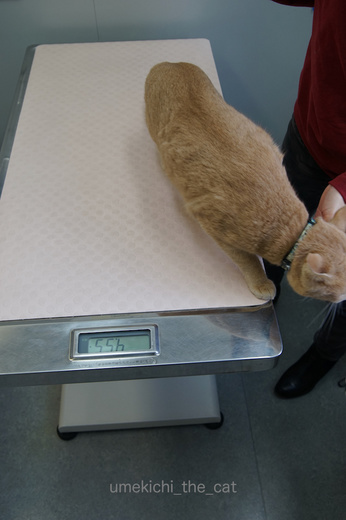
問題の体重です。反対で読みにくいですが4550ｇ。このあと行動が落ち着くと4600ｇ。
目標は4650ｇだったので余裕でクリアです！
ダイエットを始めた時点で5250ｇあった体重が4600ｇ。3ヶ月でー650ｇです。
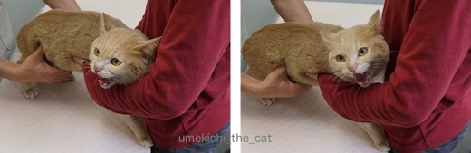
先生にお腹をもみもみされてお怒りの梅吉さん。笑
脂肪がしっかり落ちて筋肉はちゃんと残っているので
ダイエットは大成功とのお褒めの言葉。
（体重が落ちて筋肉が減っているのは要注意とのことでした）
これだけすっきり体重が落ちているので前回指摘された
中性脂肪の血液検査もなし。痛い思いもせずに済みましたよ。
一家揃ってドヤ顔！
ガブガブ時にクッションについていた血の跡。
（yes_hamaさん、ちゃんとクッション持っていきました！）
歯はとってもキレイで全く問題なし。
あまりのガブガブに布の繊維で傷がついちゃうのでしょう、
ガブガブのしすぎやな、とのことでした。
二つの心配事が解決してホッとしたおとーさんとおかーさんでした。
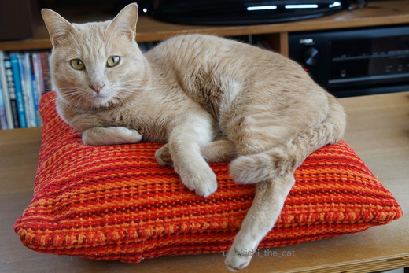
わし、やったで〜キメのポーズ。
もう体重を落とす必要は無くなったのでフードはもう少し増量できることになりました。
そして6ヶ月後に再診です。
梅吉頑張った！
 ↑ガブッと一押し↑
↑ガブッと一押し↑
経過1ヶ月の記事
経過2ヶ月の記事
今日はダイエットの成果を持って病院に行ってきました。
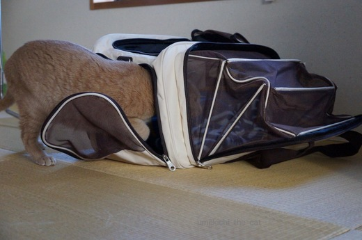
キャリーを出すと余裕で探索。
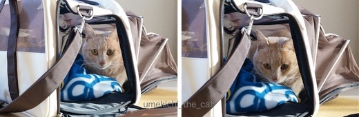
とりあえず入ってみる。あ、ちょっと恐怖の記憶が蘇ってきたかな？
今日は大阪にしてはとんでもなく寒くて風も強いので
あったかいタオルでしっかりガードしてお出かけです。
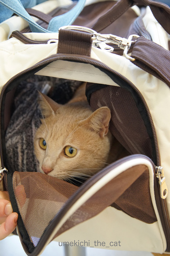
病院の待合室にて。さすがに不安そうです。
先生の顔を見るなり、フーッ！シャーッ！！うぉーーーーんっ！！！笑
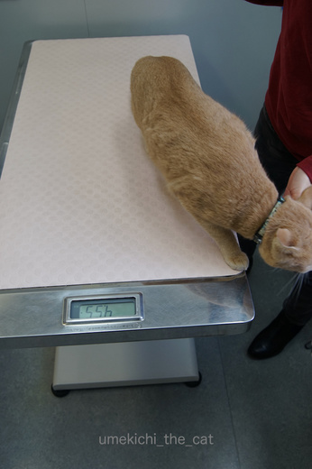
問題の体重です。反対で読みにくいですが4550ｇ。このあと行動が落ち着くと4600ｇ。
目標は4650ｇだったので余裕でクリアです！
ダイエットを始めた時点で5250ｇあった体重が4600ｇ。3ヶ月でー650ｇです。
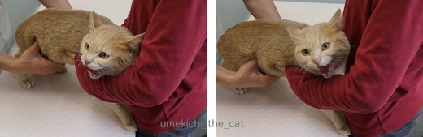
先生にお腹をもみもみされてお怒りの梅吉さん。笑
脂肪がしっかり落ちて筋肉はちゃんと残っているので
ダイエットは大成功とのお褒めの言葉。
（体重が落ちて筋肉が減っているのは要注意とのことでした）
これだけすっきり体重が落ちているので前回指摘された
中性脂肪の血液検査もなし。痛い思いもせずに済みましたよ。
一家揃ってドヤ顔！
ガブガブ時にクッションについていた血の跡。
（yes_hamaさん、ちゃんとクッション持っていきました！）
歯はとってもキレイで全く問題なし。
あまりのガブガブに布の繊維で傷がついちゃうのでしょう、
ガブガブのしすぎやな、とのことでした。
二つの心配事が解決してホッとしたおとーさんとおかーさんでした。
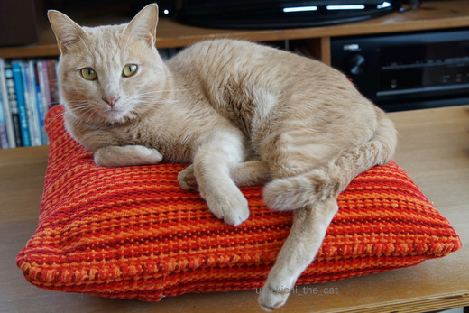
わし、やったで〜キメのポーズ。
もう体重を落とす必要は無くなったのでフードはもう少し増量できることになりました。
そして6ヶ月後に再診です。
梅吉頑張った！

カフェオレ色の梅吉

梅吉 2023年8月10日 永眠


梅吉と出会った譲渡会

犬猫の理由なき殺処分ゼロ
妄想広告
UMEKICHI 光

爆発的に早い！
時々攻撃的！
Thanks to Mr.Boss365
爆発的に早い！
時々攻撃的！
Thanks to Mr.Boss365

ダイエット成功の梅吉さんのどやポーズ、ライザップのＣＭソングが聞こえてきそうです(*^▽^*)
歯も大丈夫、ごはんも増量、2017年幸先良いスタートですね！
ウチのガブリエルも時々タオルを噛み過ぎてうっすら血が付くことあります。痛いだろうと思うのですが、噛むのはやめません(ーー;)
by ゆきち (2017-01-14 16:37)
ダイエット成功おめでとぉ～ございます(#^.^#)
梅吉さんのドヤ顔も決まってますねぇ～！
by きぃ (2017-01-14 20:34)
梅吉さん、ダイエット成功おめでとうございます♪( ´▽｀)
筋肉はそのままで脂肪だけ落とすなんて、理想のダイエットですねぇ*\(^o^)/*
ドヤ顏も当然ですよね（≧∇≦）
by ニッキー (2017-01-14 21:06)
梅吉さんダイエット成功、おめでとうございます。
クッション持っていかれたのですね。お手数おかけしました。m(_ _)m
でも歯に異常なしとのことでよかったです！
（私が心配しすぎだったかな？^^;）
by yes_hama (2017-01-14 21:38)
梅吉さんの
キャリーバックの不安顔、お怒りの顔、決めポーズのドヤ顔、フルコースで
見られましたよ。
ダイエット頑張りましたね〜
おとーさんとおかーさんに花マルを差し上げます。
by kiki (2017-01-14 21:44)
梅吉さん、ダイエット成功したんですねー
おめでとーございますーヽ(*´∀｀)ノ
茶々もダイエットさせたい＞＜；
by sumi-cyan (2017-01-14 22:03)
おめでとうございます
by 粋田化石 (2017-01-14 22:46)
梅吉さん 病院お疲れ様
そしてダイエット成功おめでとう！すごいね！！
動物のダイエットって大変なのにアッという間でしたね
すごい！すごすぎる！！
うちの子達・・・・・・・・・・・・・・変化なし(+_+)
by みいこ (2017-01-15 08:29)
すばらしい！
1割以上も落としたことになるんですよね！
これはドヤ顔、ドヤポーズ、何しても許されますって～。
by よーちゃん (2017-01-15 10:54)
お～！ダイエット成功！おめでとです～♪
by てんてん (2017-01-15 10:58)
梅吉さんもシャーするんですね！！
ネコ様だったんだ〜(^^;
ダイエット成功！スゴいです。
梅吉さんももちろん、ちぃさんの頑張りもあっての結果ですよね〜。
私もゆづの健康維持に邁進します！！
by も〜 (2017-01-15 14:53)
ダイエット成功おめでとうございます!!ちぃさんも梅吉君も頑張った～～ヽ(^o^)丿クッションについていた血も何ともなくてよかったですね。
by palpal (2017-01-15 16:15)
筋肉落とさずに体重減らすなんて、梅吉くんスゴイですね！
布をガブガブして傷ついて血が出ちゃうくらいですから、もしかしたら、ハミガキ効果があるのでは？自分で歯を綺麗にしてらっしゃる…？
by BillK-ko (2017-01-15 18:13)
歯＆歯茎に問題はなかったのですね。
良かったー^^
そしてダイエット成功おめでとう！
あああ、見習わねば・・・昨日もラーメン食べちゃった・・
by リュカ (2017-01-16 10:25)
梅吉さんダイエットお疲れさまでした。
まろんもライザップが必要かもです＾＾
by じゅらまろ (2017-01-16 11:30)
ゆきちさん＞結果にコミットしましたよー。
CM依頼が来たら
良い例→梅吉、悪い例→おかーさん、と親子共演できそうです！笑
きぃさん＞やりましたよ〜(๑˃̵ᴗ˂̵)و
実はドヤ顔の写真は病院に行く前に撮ったのですが
本にゃんは「わし、これからほめられるからな！」って自信満々だったのかも。
ニッキーさん＞日々のハードな取ってこい運動が筋肉維持に繋がったのでしょうか。
父母も死んだ魚の眼になるまで付き合ってよかったと思ってます。笑
yes_hamaさん＞百聞は一見に如かず、ですからクッション持参でとてもよかったですよ。
アドバイスありがとうございました！
ガブガブ跡の激しいクションを見た先生は
「ごっついがぶがぶやな・・・」と目を丸くしてました。笑
kikiさん＞わぁ〜い(≧▽≦) kikiさんに花マルいただいちゃった。嬉しいなぁ・・・
欲しがっているのにあげない、は結構精神力が必要でした。
週末はついつい「がんばったごほうび」をあげてしまったので
今日からまた梅吉の健康管理に励みます。
sumi-cyanさん＞梅吉がダイエットを始めたのは
血液検査の結果が悪かったからなんですよ。
少々太めでも健康診断で問題がなければそれがその子の適正体重かも。
太り過ぎはよくないですけどね〜。愛猫の健康管理お互いがんばろー。
粋田化石さん＞ありがとうございます！梅吉頑張りました！！
愛猫は健康だよ、と太鼓判を押されるのはなんとも嬉しいことです。
みいこさん＞ダイエット指令が出た時、病院で
「短期間で済ませた方がいつまでもひもじくなくて良いでしょう？」
と言われたことが励みにまりました。
「変化なし」、今が健康なら現状維持が一番かもよ〜。
よーちゃんさん＞そうなんです！もうみんなでドヤドヤ！！笑
梅吉、これからはシュッとした漢で行きます。笑
てんてんさん＞ありがとうございます〜♪
健康のためにと梅吉、父母みんなで頑張りました！
も〜さん＞人間を怖がらないフレンドリーな梅吉だから病院でも
「せんせい、こんにちは〜。わし、きたで〜」と
お愛想するのを期待してたんですが・・・^^;
梅吉のフーッ！シャーッ！！うぉーーーーんっ！！！は病院限定。
猫様、やるときはやります。笑
by ちぃ (2017-01-16 11:36)
palpalさん＞ありがとうございます！
ブログでダイエット宣言をしたからには失敗出来ないわ・・・と。
ガブガブ後の血も問題なしでうれしかったけれど・・・・
血が出るまでかじらんといてー！！！！！！笑
BillK-koさん＞梅吉のガブガブはデンタルフロスみたいな役目が！？
もしかしてセルフケアだったのかしら・・・笑
小型犬用の細いロープをより合わせて作った
「歯磨き効果があります！」っていうおもちゃには見向きもしないくせに〜
どうしてクッションなの〜涙
リュカさん＞ダイエットより治療が大変そうな歯＆歯茎が何もなくて
本当に良かったです。
獣医さんも「ガブガブする子はしますからね〜」って
噛み跡激しいクッションを見てニヤニヤしてました。笑
病院翌日、
良かった良かったと言いながら美味しいちゃんぽん食べて来ちゃった^^
じゅらまろさん＞病院後疲れてぐっすりかな・・・と思っていたら
興奮しているのかレジ袋玉を相手に大運動会の梅吉でした。
若いってすばらしい・・・・（うらやましい・・・）
by ちぃ (2017-01-16 14:29)